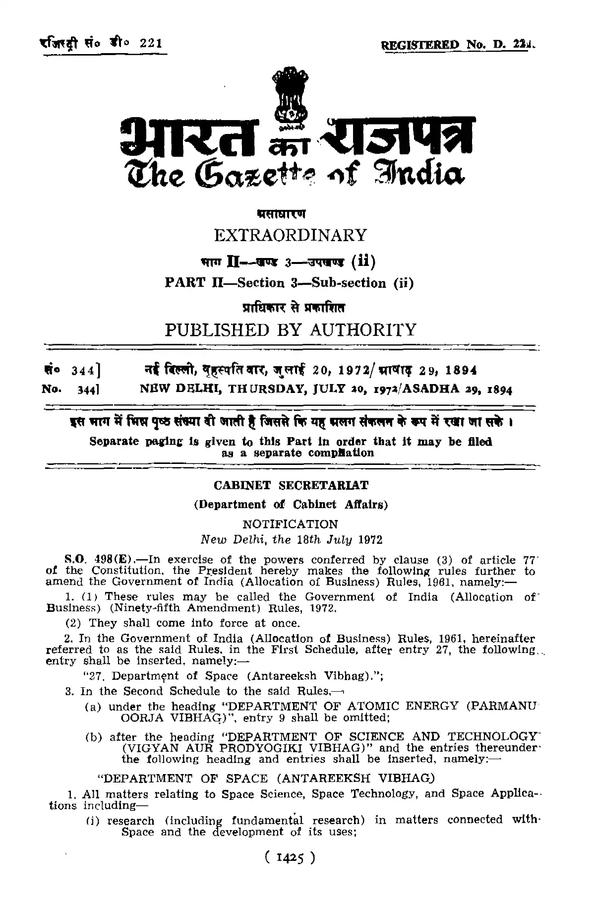
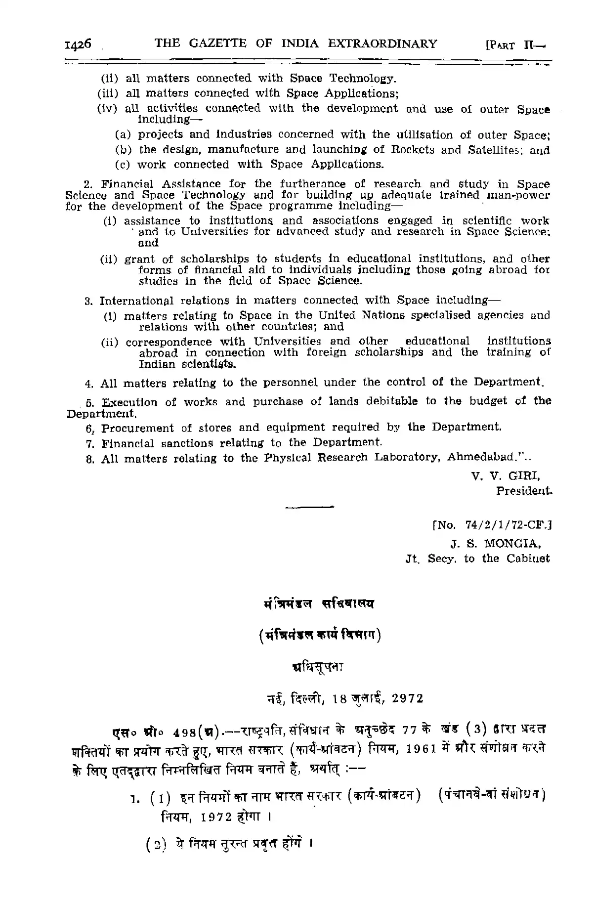
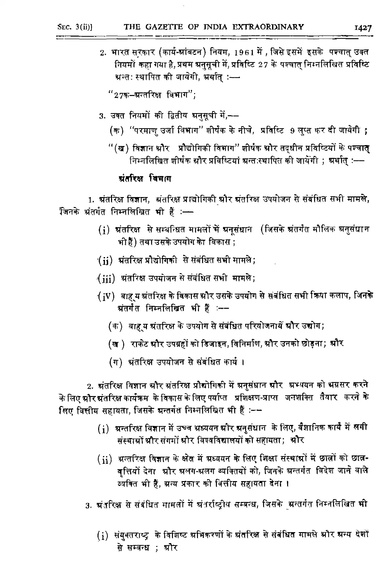
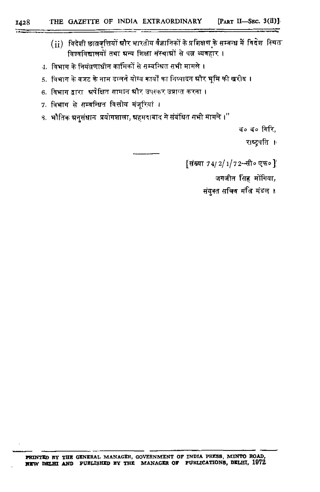

Amendment #95 (S.O. 498(E), 1972)
3 changes: 1 to the First Schedule, 2 to the Second Schedule. 3 applied
What it did to the ministries
- bornThe Department of Space is created. change 1, 3 · histories: Space
The order, page by page
Page 1 of 4

123after Schedule 1 › entry 27
- 27A. Department of Space
applied at schedule 1 › department 27A in the Rules after #95
Schedule 2 › DEPARTMENT OF ATOMIC ENERGY › entry 9
applied at schedule 2 › ministry DEPARTMENT OF ATOMIC ENERGY › entry 9 in the Rules after #95
after Schedule 2 › DEPARTMENT OF SCIENCE AND TECHNOLOGY
- DEPARTMENT OF SPACE
- 1. All matters relating to Space Science, Space Technology, and Space Applica-- tions including-
- i. research (Including fundamental research) in matters connected with- Space and the development of its uses : [PART II (11) all matters connected with Space Technology.
- iii. all matters connected with Space Applications (Iv) all activities connected with the development and use of outer Space including-
- a. projects and industries concerned with the utilisation of outer Space
- b. the design, manufacture and launching of Rockets and Satellites; and
and 9 more
- c. work connected with Space Applications.
- 2. Financial Assistance for the furtherance of research and study in Space Science and Space Technology and for building up adequate trained man-power for the development of the Space programme including— (1) assistance to institutions and associations engaged in scientific work and to Universities…
- ii. grant of scholarships to students in educational institutions, and other forms of financial ald to individuals including those going abroad for studies in the field of Space Science.
- 3. International relations in matters connected with Space including- (1) matters relating to Space in the United Nations specialised agencies and relations with other countries; and
- ii. correspondence with Universities and other educational Institutions abroad in connection with foreign scholarships and the training of Indian scientists.
- 4. All matters relating to the personnel under the control of the Department.
- 5. Execution of works and purchase of lands debitable to the budget of the Department. 6, Procurement of stores and equipment required by the Department.
- 7. Financial sanctions relating to the Department.
- 8. All matters relating to the Physical Research Laboratory, Ahmedabad.
applied at schedule 2 › department DEPARTMENT OF SPACE in the Rules after #95
read page break
Page 2 of 4

Page 3 of 4

Page 4 of 4

How this document was read
Edits to the reading
| Date | By | Edit | Before → after |
|---|---|---|---|
| 12 November 2026 | claude | word corrected |
From the Government of India (Allocation of Business) Rules, 1961 and their amendments, as published by the Cabinet Secretariat (cabsec.gov.in), read by orgpedia. The readings of the older scanned gazettes have known gaps.